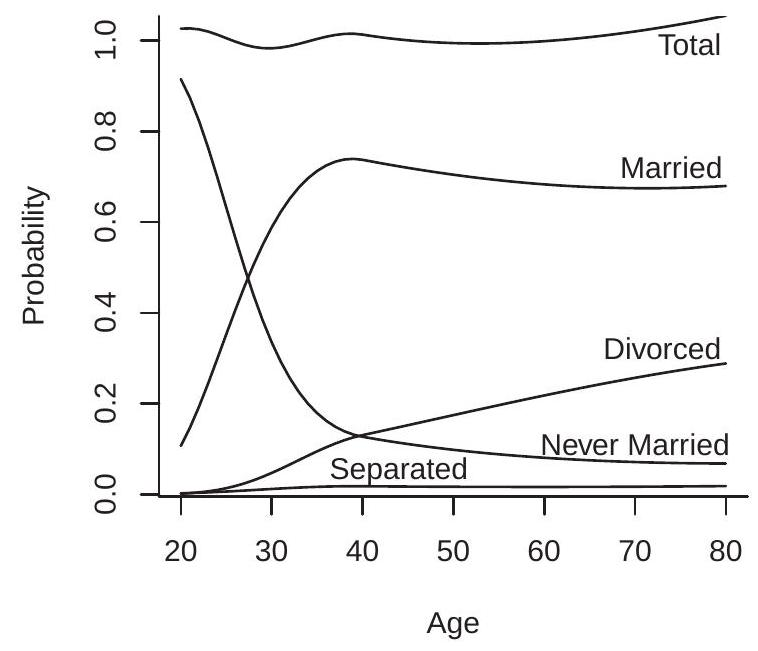
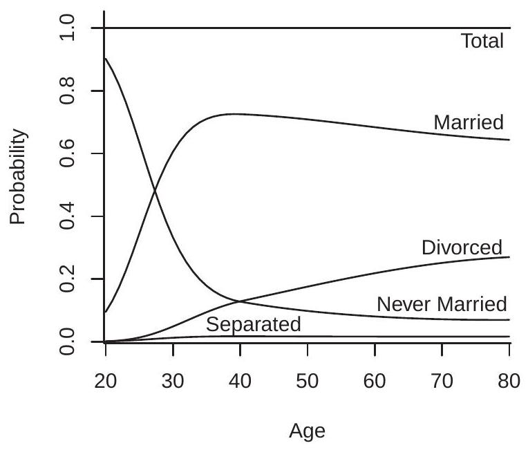
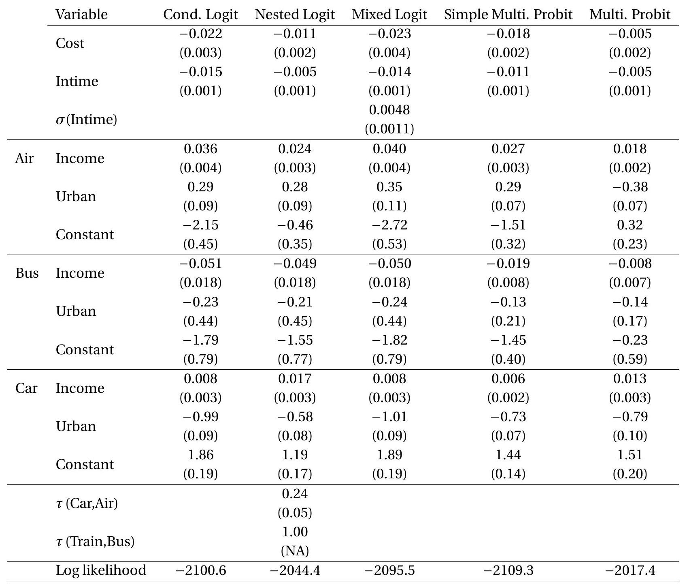
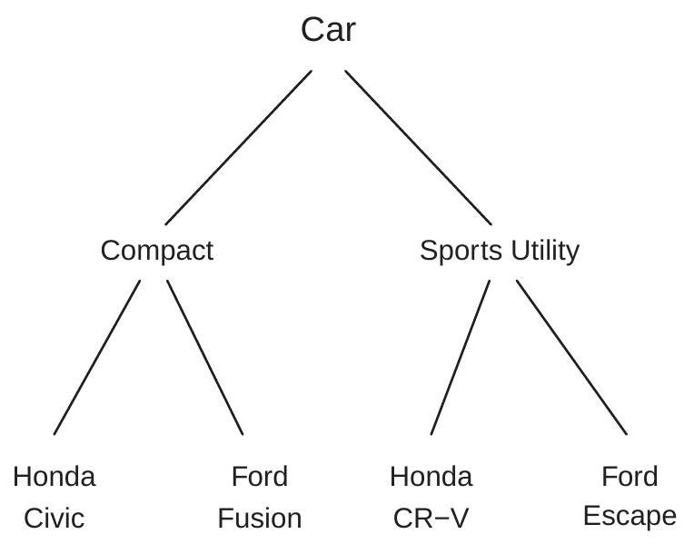
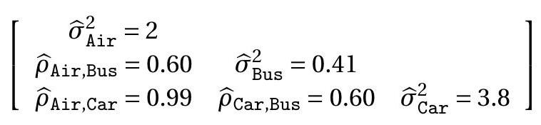
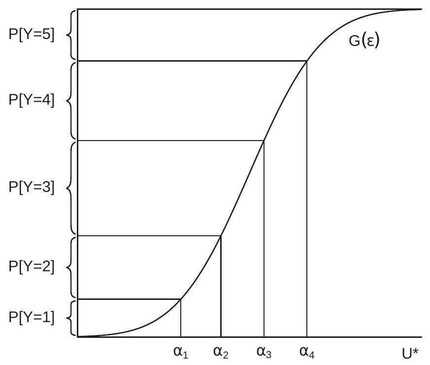

24 Multiple Choice
24.1 Introduction
This chapter surveys multinomial models. This includes multinomial response, multinomial logit, conditional logit, nested logit, mixed logit, multinomial probit, ordered response, count data, and the BLP demand model.
For more detailed treatments see Maddala (1983), Cameron and Trivedi (1998), Cameron and Trivedi (2005), Train (2009), and Wooldridge (2010).
24.2 Multinomial Response
A multinomial random variable \(Y\) takes values in a finite set, typically written as \(Y \in\{1,2, \ldots, J\}\). The elements of the set are often called alternatives. In most applications the alternatives are categorical (car, bicycle, airplane, train) and unordered. When there are no regressors the model is fully described by the \(J\) probabilities \(P_{j}=\mathbb{P}[Y=j]\).
We typically describe the pair \((Y, X)\) as multinomial response when \(Y\) is multinomial and \(X \in \mathbb{R}^{k}\) are regressors. The conditional distribution of \(Y\) given \(X\) is summarized by the response probability
\[ P_{j}(x)=\mathbb{P}[Y=j \mid X=x] . \]
The response probabilities are nonparametrically identified and can be arbitrary functions of \(x\).
We illustrate by extending the marriage status example of the previous chapter. The CPS variable marital records seven categories. We partition these into four alternatives: “married”1 , “divorced”, “separated”, and “never married”. Let \(X\) be age. \(P_{j}(x)\) for \(j=1, \ldots, 4\) is the probability of each marriage status as a function of age. For our illustration we take the population of college-educated women.
Since the response probabilities \(P_{j}(x)\) are nonparametrically identified a simple estimation method is binary response separately for each category. We plot in Figure 26.1 (a) logit estimates using a quadratic spline in age and a single knot at age 40 . The estimates show that the probability of “never married” decreases monotonically with age, that for “married” increases until around 38 and then decreases slowly, the probability of “divorced” increases monotonically with age, and the probability of “separated” is low for all age groups.
A defect of the estimates of Figure 26.1(a) is that the sum of the four estimated probabilities (displayed as “Total”) does not equal one. This shows that separate estimation of the response probabilities neglects system information. For the remainder of this chapter the estimators discussed do not have this defect.
\({ }^{1}\) marital \(=1,2,3,4\), which includes widowed.

- Binary Response Estimates

- Multinomial Logit
Figure 26.1: Probability of Marital Status Given Age for College Educated Women
Multinomial response is typically motivated and derived from a model of latent utility. The utility of alternative \(j\) is assumed to equal
\[ U_{j}^{*}=X^{\prime} \beta_{j}+\varepsilon_{j} \]
where \(\beta_{j}\) are coefficients and \(\varepsilon_{j}\) is an alternative-specific error. The coefficients \(\beta_{j}\) describe how the variable \(X\) affects an individual’s utility of alternative \(j\). The error \(\varepsilon_{j}\) is individual-specific and contains unobserved factors affecting an individual’s utility. In the marriage status example (where \(X\) is age) the coefficients \(\beta_{j}\) describe how the utility of each marriage status varies with age, while the error \(\varepsilon_{j}\) contains the individual factors which are not captured by age.
In the latent utility model an individual is assumed to select the alternative with the highest utility \(U_{j}^{*}\). Thus \(Y=j\) if \(U_{j}^{*} \geq U_{\ell}^{*}\) for all \(\ell\). In model (26.1) this choice is unaltered if we add \(X^{\prime} \gamma\) to each utility. This means that the coefficients \(\beta_{j}\) are not separately identified, at best the differences between alternatives \(\beta_{j}-\beta_{\ell}\) are identified. Identification is achieved by imposing a normalization; the standard choice is to set \(\beta_{j}=0\) for a base alternative \(j\), often taken as the last category \(J\). Reported coefficients \(\beta_{j}\) should be interpreted as differences relative to the base alternative.
The choice is also unchanged if each utility (26.1) is multiplied by positive constant. This means that the scale of the coefficients \(\beta_{j}\) is not identified. To achieve identification it is typical to fix the scale of the errors \(\varepsilon_{j}\). Consequently the scale of the coefficients \(\beta_{j}\) has no interpretive meaning.
Two classical multinomial response models are logit and probit. We introduce multinomial logit in the next section and multinomial probit in Section \(26.8\).
24.3 Multinomial Logit
The simple multinomial logit model is
\[ P_{j}(x)=\frac{\exp \left(x^{\prime} \beta_{j}\right)}{\sum_{\ell=1}^{J} \exp \left(x^{\prime} \beta_{\ell}\right)} . \]
The model includes binary logit \((J=2)\) as a special case. We call (26.2) the simple multinomial logit to distinguish it from the conditional logit model of the next section.
The multinomial logit arises from the latent utility model (26.1) for the following error distributions.
Definition 26.1 The Type I Extreme Value distribution function is
\[ F(\varepsilon)=\exp (-\exp (-\varepsilon)) . \]
Definition 26.2 The Generalized Extreme Value (GEV) joint distribution is
\[ F\left(\varepsilon_{1}, \varepsilon_{2}, \ldots, \varepsilon_{J}\right)=\exp \left(-\left[\sum_{j=1}^{J} \exp \left(-\frac{\varepsilon_{j}}{\tau}\right)\right]^{\tau}\right) \]
for \(0<\tau \leq 1\).
For \(J=1\) the GEV distribution (26.3) equals the Type I extreme value. For \(J>1\) and \(\tau=1\) the GEV distribution equals the product of independent Type I extreme value distributions. For \(J>1\) and \(\tau<1\) GEV random variables are dependent with correlation equal to \(1-\tau^{2}\) (see Kotz and Nadarajah (2000)). The parameter \(\tau\) is known as the dissimilarity parameter. The distribution (26.3) is a special case of the “GEV distribution” introduced by McFadden (1981). Furthermore, there is heterogeneity among authors regarding the choice of notation and labeling. The notation used above is consistent with the Stata manual. In contrast, McFadden \((1978,1981)\) used \(1-\sigma\) in place of \(\tau\) and called \(\sigma\) the similarity parameter. Cameron and Trivedi (2005) used \(\rho\) instead of \(\tau\) and called \(\rho\) the scale parameter.
The following result is due to McFadden \((1978,1981)\).
Theorem 26.1 Assume the utility of alternative \(j\) is \(U_{j}^{*}=X^{\prime} \beta_{j}+\varepsilon_{j}\) and the error vector \(\left(\varepsilon_{1}, \ldots, \varepsilon_{j}\right)\) has GEV distribution (26.3). Then the response probabilities equal
\[ P_{j}(X)=\frac{\exp \left(X^{\prime} \beta_{j} / \tau\right)}{\sum_{\ell=1}^{J} \exp \left(X^{\prime} \beta_{\ell} / \tau\right)} . \]
The proof is in Section 26.13. The response probabilities in Theorem \(26.1\) are multinomial logit (26.2) with coefficients \(\beta_{j}^{*}=\beta_{j} / \tau\). The dissimilarity parameter \(\tau\) only affects the scale of the coefficients, which is not identified. Thus GEV errors imply a multinomial logit model and \(\tau\) is not identified.
As discussed above, when \(\tau=1\) the GEV distribution (26.3) specializes to i.i.d. Type I extreme value. Thus a special case of Theorem \(26.1\) is the following: If the errors \(\varepsilon_{j}\) are i.i.d. Type I extreme value then the response probabilities are multinomial logit (26.2) with coefficients \(\beta_{j}\). This is the most commonly-used and commonly-stated implication of Theorem \(26.1\).
In contemporary choice modelling a commonly-used assumption is that utility is extreme value distributed. This is done so that Theorem \(26.1\) can be invoked to deduce that the choice probabilities are multinomial logit. A reasonable deduction is that this assumption is made for algebraic convenience, not because anyone believes that utility is actually extreme valued distributed.
The likelihood function given a random sample \(\left\{Y_{i}, X_{i}\right\}\) is straightforward to construct. Write the response probabilities \(P_{j}(X \mid \beta)\) as functions of the parameter vector \(\beta=\left(\beta_{1}, \ldots, \beta_{J}\right)\). The probability mass function for \(Y\) is
\[ \pi(Y \mid X, \beta)=\prod_{j=1}^{J} P_{j}(X \mid \beta)^{\mathbb{1}\{Y=j\}} . \]
The log-likelihood function is
\[ \ell_{n}(\beta)=\sum_{i=1}^{n} \sum_{j=1}^{J} \mathbb{1}\left\{Y_{i}=j\right\} \log P_{j}\left(X_{i} \mid \beta\right) \]
The maximum likelihood estimator (MLE) is:
\[ \widehat{\beta}=\underset{\beta}{\operatorname{argmax}} \ell_{n}(\beta) . \]
There is no algebraic solution so \(\widehat{\beta}\) needs to be found numerically. The log-likelihood function is globally concave so maximization is numerically straightforward.
To illustrate, we estimate the marriage status example of the previous section using multinomial logit and display the estimated response probabilities in Figure 26.1(b). The estimates are similar to the binary choice estimates in panel (a) but by construction sum to one.
The coefficients of a multinomial choice model can be difficult to interpret. Therefore in applications it may be useful to examine and report marginal effects. We can calculate \({ }^{2}\) that the marginal effects are
\[ \delta_{j}(x)=\frac{\partial}{\partial x} P_{j}(x)=P_{j}(x)\left(\beta_{j}-\sum_{\ell=1}^{J} \beta_{\ell} P_{\ell}(x)\right) . \]
This is estimated by
\[ \widehat{\delta}_{j}(x)=\widehat{P}_{j}(x)\left(\widehat{\beta}_{j}-\sum_{\ell=1}^{J} \widehat{\beta}_{\ell} \widehat{P}_{\ell}(x)\right) . \]
The average marginal effect \(\operatorname{AME}_{j}=\mathbb{E}\left[\delta_{j}(X)\right]\) can be estimated by
\[ \widehat{\mathrm{AME}}_{j}=\frac{1}{n} \sum_{i=1}^{n} \widehat{\delta}_{j}\left(X_{i}\right) . \]
In Stata, multinomial logit can be implemented using the mlogit command. Probabilities can be calculated by predict and average marginal effects by margins, dydx. In R, multinomial logit can be implemented using the mlogit command.
\({ }^{2}\) See Exercise 26.3.
24.4 Conditional Logit
In the simple multinomial logit model of the previous section the regressors \(X\) (e.g., age) are specific to the individual but not the alternative (they do not have a \(j\) subscript). In most applications, however, there are regressors which vary across alternatives. A typical example is the price or cost of an alternative. In a latent utility model it is reasonable to assume that these alternative-specific regressors only affect an individual’s utility if that specific alternative is selected. A choice model which allows for regressors which differ across alternatives was developed by McFadden in the 1970s, which he called the Conditional Logit model.
An example will help illustrate the setting. Suppose you (a student) need to select a mode of travel from your apartment to the university. Travel alternatives may include: walk, bicycle, bus, train, or car. Which will you select? Your choice will undoubtedly depend on a number of factors, and of particular importance is the \(\operatorname{cost}^{3}\) of each alternative. We can model this by specifying that the utility \(Y_{j}^{*}\) (26.1) of alternative \(j\) is a function of its cost \(X_{j}\).
As a concrete example consider the dataset Koppelman on the textbook webpage. This is an abridged version of the dataset ModeCanada distributed with the R package mlogit, and used in the papers Forinash and Koppelman (1993), Koppelman and Wen (2000), and Wen and Koppelman (2001). The data are responses to a survey \({ }^{4}\) of Canadian business travelers concerning their actual travel choices in the Toronto-Montreal corridor. Each observation \((n=2779)\) is a specific individual making a specific trip. Four travel alternatives were considered: train, air, bus, and car. Available regressors include the cost of each alternative, the in-vehicle travel time (intime) of each alternative, household income, and an indicator if one of the trip endpoints is an urban center.
The conditional logit model posits that the utility of alternative \(j\) is a function of regressors \(X_{j}\) which vary across alternative \(j\) :
\[ U_{j}^{*}=X_{j}^{\prime} \gamma+\varepsilon_{j} . \]
Here, \(\gamma\) are coefficients and \(\varepsilon_{j}\) is an alternative-specific error. Notice that in contrast to (26.1) that \(X_{j}\) varies across \(j\) while the coefficients \(\gamma\) are common. For example, in the Koppelman data set the variables cost and intime are recorded for each individual/alternative pair. (For example, the first observation in the sample is a traveler who could have selected train travel for \(\$ 58.25\) and a travel time of 215 minutes, air travel for \(\$ 142.80\) and 56 minutes, bus travel for \(\$ 27.52\) and 301 minutes, or car travel for \(\$ 71.63\) and 262 minutes. This traveler selected to travel by air.)
To understand the difference between the multinomial logit and the conditional logit models, (26.1) describes how the utility of a specific alternative (e.g. married or divorced) is affected by a variable such as age. This requires a separate coefficient for each alternative to have an impact. In contrast, (26.6) describes how the utility of an alternative (e.g. train or car) is affected by factors such as cost and time. These variables have common meanings across alternatives so the restriction that the coefficients are common appears reasonable.
More generally the conditional logit model allows some regressors \(X_{j}\) to vary across alternatives while other regressors \(W\) do not vary across \(j\). This model is
\[ U_{j}^{*}=W^{\prime} \beta_{j}+X_{j}^{\prime} \gamma+\varepsilon_{j} . \]
For example, in the Koppelman dataset the variables cost and intime are components of \(X_{j}\) while the variables income and urban are components of \(W\).
In model (26.7) the coefficients \(\gamma\) and coefficient differences \(\beta_{j}-\beta_{\ell}\) are identified up to scale. Identification is achieved by normalizing the scale of \(\varepsilon_{j}\) and setting \(\beta_{J}=0\) for a base alternative \(J\).
\({ }^{3}\) Cost can be multi-dimensional, for example including monetary cost and travel time.
\({ }^{4}\) The survey was conducted by the Canadian national rail carrier to assess the demand for high-speed rail. The conditional logit model is (26.6) or (26.7) plus the assumption that the errors \(\varepsilon_{j}\) are distributed i.i.d. Type I extreme value \({ }^{5}\). From Theorem \(26.1\) we deduce that the probability response functions equal
\[ P_{j}(w, x)=\frac{\exp \left(w^{\prime} \beta_{j}+x_{j}^{\prime} \gamma\right)}{\sum_{\ell=1}^{J} \exp \left(w^{\prime} \beta_{\ell}+x_{\ell}^{\prime} \gamma\right)} . \]
This is multinomial logit but with regressors and coefficients \(W^{\prime} \beta_{j}+X_{j}^{\prime} \gamma\).
Let \(\theta=\left(\beta_{1}, \ldots \beta_{J}, \gamma\right)\). Given the observations \(\left\{Y_{i}, W_{i}, X_{i}\right\}\) where \(X_{i}=\left\{X_{1 i}, \ldots, X_{J i}\right\}\), the log-likelihood function is
\[ \ell_{n}(\theta)=\sum_{i=1}^{n} \sum_{j=1}^{J} \mathbb{1}\left\{Y_{i}=j\right\} \log P_{j}\left(W_{i}, X_{i} \mid \theta\right) . \]
The maximum likelihood estimator (MLE) \(\widehat{\theta}\) maximizes \(\ell_{n}(\theta)\). There is no algebraic solution so \(\widehat{\theta}\) needs to be found numerically.
Using the Koppelman dataset we estimate a conditional logit model. Estimates are reported in Table 26.1. Included as regressors are cost, intime, income, and urban. The base alternative is travel by train. The first two coefficient estimates are negative, meaning that the probability of selecting any mode of transport is decreasing in the monetary and time cost of this mode of travel. The income and urban variables are not alternative-specific so have coefficients which vary by alternative. The urban coefficient for air is positive and that for car is negative, indicating that the probability of air travel is increased relative to train travel if an endpoint is urban, and conversely for car travel. The income coefficient is positive for air travel and negative for bus travel, indicating that transportation choice is affected by a traveler’s income in the expected way.
As discussed previously, coefficient estimates can be difficult to interpret. It may be useful to calculate transformations such as average marginal effects. The average marginal effects with respect to the input \(W\) are estimated as in (26.5) with \(\widehat{P}_{\ell}\left(X_{i}\right)\) replaced by \(\widehat{P}_{\ell}\left(W_{i}, X_{i}\right)\). For the inputs \(X_{j}\) we calculate \({ }^{6}\) that
\[ \delta_{j j}(w, x)=\frac{\partial}{\partial x_{j}} P_{j}(w, x)=\gamma P_{j}(w, x)\left(1-P_{j}(w, x)\right) \]
and for \(j \neq \ell\)
\[ \delta_{j \ell}(w, x)=\frac{\partial}{\partial x_{\ell}} P_{j}(w, x)=-\gamma P_{j}(w, x) P_{\ell}(w, x) . \]
Note that these are double indexed ( \(j\) and \(\ell\) ). For example for \(X=\operatorname{cost}, j=\) train and \(\ell=\) air, \(\delta_{j \ell}\) is the marginal effect of a change in the cost of air travel on the probability of train travel. In the conditional logit model, calculation (26.10) implies the symmetric response \(\delta_{j \ell}(w, x)=\delta_{\ell j}(w, x)\). This means that the marginal effect of (for example) air cost on train travel equals the marginal effect of train cost on air travel \(^{7}\). The average marginal effects \(\mathrm{AME}_{j \ell}=\mathbb{E}\left[\delta_{j \ell}(W, X)\right]\) can be estimated by the analogous sample averages as in (26.5). One useful implication of (26.9) and (26.10) is that the components of AME \({ }_{j j}\) have the same signs as the components of \(\gamma\) and the components of \(\mathrm{AME}_{j \ell}\) have the opposite signs. Thus, for example, if the coefficient \(\gamma\) on a cost variable is negative then the own-price effect is negative and the cross-price effects are positive.
To illustrate, we report a set of estimated AME of cost and time factors on the probability of train travel in Table 26.2. We focus on train travel because the demand for high-speed rail was the focus of the
\({ }^{5}\) The model is unaltered if the errors are jointly GEV with dissimilarity parameter \(\tau\). However, \(\tau\) is not identified so without loss of generality it is assumed that \(\tau=1\).
\({ }^{6}\) See Exercise \(26.5\).
\({ }^{7}\) This symmetry breaks down if nonlinear transformations are included in the model. Table 26.1: Multinomial Models for Transportation Choice

original study. We calculate and report the AME of the monetary cost and travel time of train, air, and car travel. To convert the AME into approximate elasticities (which may be easier to interpret), divide each AME by the probability of train travel (0.17) and multiply by the sample mean of the factor, reported in the first column. You can calculate that the estimated approximate elasticity of train travel with respect to train cost is \(-0.9\), with respect to train travel time is \(-2.5\), with respect to air cost is \(1.0\), with respect to air travel time is \(0.25\), with respect to car cost is \(0.6\), and with respect to car travel time is \(1.5\). These estimates indicate that train travel is sensitive to its travel time, is sensitive with respect to its monetary cost and that of airfare, and is sensitive to the travel time of car travel. We can use the estimated AME to calculate the rough effects of cost and travel time changes. For example, suppose high-speed rail reduces train travel time by \(33 %\) - an average reduction of 75 minutes - while price is unchanged. The estimates imply this will increase train travel probability by \(0.14\), that is, from \(17 %\) to \(31 %\), which is close to a doubling of usage.
In many cases it is natural to expect that the coefficients \(\gamma\) will vary across individuals. We discuss models with random \(\gamma\) in Section 26.7. A simpler specification is to allow \(\gamma\) to vary with the individual Table 26.2: AME of Cost and Time on Train Travel
| Effect of | Mean | Cond. Logit | Mixed Logit | Simple Multi. Probit | Multi. Probit |
|---|---|---|---|---|---|
| Train Cost ($) | {56 | \(-0.27\) | \(-0.28\) | \(-0.32\) | \(-0.08\) |
| \((0.04)\) | \((0.05)\) | \((0.04)\) | \((0.03)\) | ||
| Train Time (min.) | {224 | \(-0.19\) | \(-0.20\) | \(-0.19\) | \(-0.09\) |
| \((0.01)\) | \((0.01)\) | \((0.01)\) | \((0.01)\) | ||
| Air Cost ($) | {153 | \(0.11\) | \(0.11\) | \(0.13\) | \(0.05\) |
| { | \((0.02)\) | \((0.02)\) | \((0.02)\) | ||
| Air Time (min.) | {54 | \(0.08\) | \(0.08\) | \(0.08\) | \(0.06\) |
| \((0.01)\) | \((0.01)\) | \((0.01)\) | \((0.01)\) | ||
| Car Cost ($) | {65 | \(0.16\) | \(0.17\) | \(0.18\) | \(0.02\) |
| \((0.01)\) | \((0.03)\) | \((0.02)\) | \((0.01)\) | ||
| Car Time (min.) | {232 | \(0.11\) | \(0.12\) | \(0.11\) | \(0.02\) |
| \((0.01)\) | \((0.01)\) | \((0.01)\) | \((0.01)\) |
Note: For ease of reading, the reported AME estimates have been multiplied by 100.
characteristic \(W\). For example in the transportation application the opportunity cost of travel time is likely related to an individual’s wage which can be proxied by household income. We can write this as \(\gamma=\gamma_{1}+\gamma_{2} X\). Substituted into (26.7) we obtain the model
\[ U_{j}^{*}=W \beta_{j}+X_{j} \gamma_{1}+X_{j} W \gamma_{2}+\varepsilon_{j} \]
where for simplicity we assume \(W\) and \(X_{j}\) are scalar. This can be written in form (26.7) by redefining \(X_{j}\) as \(\left(X_{j}, X_{j} W\right)\) and the same estimation methods apply. In our application this model yields a negative estimate for \(\gamma_{2}\), indicating that the cost of travel time is indeed increasing in income.
In Stata, model (26.7) can be estimated using cmclogit. Probabilities can be calculated by predict, and marginal effects by margins. In R, use mlogit.
24.5 Independence of Irrelevant Alternatives
The multinomial logit model has an undesirable restriction. For fixed parameters and regressors the ratio of the probability of two alternatives is
\[ \frac{P_{j}(W, X \mid \theta)}{P_{\ell}(W, X \mid \theta)}=\frac{\exp \left(W^{\prime} \beta_{j}+X_{j}^{\prime} \gamma\right)}{\exp \left(W^{\prime} \beta_{\ell}+X_{\ell}^{\prime} \gamma\right)} . \]
This odds ratio is a function only of the inputs \(X_{j}\) and \(X_{\ell}\), does not depend on any of the inputs specific to the other alternatives, and is unaltered by the presence of other alternatives. This property is called independence of irrelevant alternatives (IIA), meaning that the choice between option \(j\) and \(\ell\) is independent of the other alternatives and hence the latter are irrelevant to the bivariate choice. This property is strongly tied to the multinomial logit model as the latter was derived axiomatically by Luce (1959) from an IIA assumption.
To understand why IIA may be problematic it is helpful to think through specific examples. Take the transportation choice problem of the previous section. The IIA condition means that the ratio of the probability of selecting train to that of selecting car is unaffected by the price of an airplane ticket. This may make sense if individuals view the set of choices as similarly substitutable, but does not make sense if train and air are close substitutes. In this latter setting a low airplane ticket may make it highly unlikely that an individual will select train travel while unaffecting their likelihood of selecting car travel.
A famous example of this problem is the following setting. Suppose the alternatives are car and bus and suppose that the probability of the alternatives is split \(50 %-50 %\). Now suppose that we can split the bus alternative into “red bus” and “blue bus” so there are a total of three alternatives. Suppose the blue bus and red bus are close equivalents: they have similar schedules, convenience, and cost. In this context most individuals would be near indifferent between the blue and red bus so these alternatives would receive similar probabilities. It would thus seem reasonable to expect that the probabilities of these three choices would be close to \(50 %-25 %-25 %\). The IIA condition, however, implies that the ratio of the first two probabilities must remain 1, so this implies that the probabilities of the three choices would be 33%-33%-33%. We deduce that the multinomial logit model implies that adding “red bus” to the choice list results in the reduction of car usage from \(50 %\) to \(33 %\). This doesn’t make sense; it is an unreasonable implication. This example is known as the “red bus/blue bus puzzle”.
The source of the problem is that the IIA structure and multinomial logit model exclude differentiated substitutability among the alternatives. This may be appropriate when the alternatives (e.g. bus, train, and car) are clearly differentiated and have reasonably similar degrees of substitutability. It is not appropriate when a subset of alternatives (e.g. red bus and blue bus) are close substitutes.
Part of the problem is due to the restrictive correlation pattern imposed on the errors by the generalized extreme value distribution. To allow for cases such as red bus/blue bus we require a more flexible correlation structure which allows subsets of alternatives to have differential correlations.
24.6 Nested Logit
The nested logit model circumvents the IIA problem described in the previous section by separating the alternatives into groups. Alternatives within groups are allowed to be correlated but are assumed uncorrelated across groups.
The model posits that there are \(J\) groups each with \(K_{j}\) alternatives. We use \(j\) to denote the group, \(k\) to denote the alternative within a group, and ” \(j k\) ” to denote a specific alternative. Let \(W\) denote individualspecific regressors and \(X_{j k}\) denote regressors which vary by alternative. The utility of the \(j k^{t h}\) alternative is a function of the regressors plus an error:
\[ U_{j k}^{*}=W^{\prime} \beta_{j k}+X_{j k}^{\prime} \gamma+\varepsilon_{j k} . \]
The model assumes that the individual selects the alternative \(j k\) with the highest utility \(U_{j k}^{*}\).
McFadden’s Nested Logit model assumes that the errors have the following GEV joint distribution
\[ F\left(\varepsilon_{11}, \ldots, \varepsilon_{J K_{J}}\right)=\exp \left(-\sum_{j=1}^{J}\left[\sum_{k=1}^{K_{j}} \exp \left(-\frac{\varepsilon_{j k}}{\tau_{j}}\right)\right]^{\tau_{j}}\right) . \]
This is a generalization of the GEV distribution (26.3). The distribution (26.13) is the product of \(J\) GEV distributions (26.3) each with dissimilarity parameter \(\tau_{j}\), which means that the errors within each group are GEV distributed with dissimilarity parameter \(\tau_{j}\). Across groups the errors are independent. When \(\tau_{j}=1\) for all \(j\) the errors are mutually independent and the joint model equals conditional logit. When \(\tau_{j}<1\) for some \(j\) the errors within group \(j\) are correlated but not with the other errors. If a group has a single alternative its dissimilarity parameter is not identified so should be set to one.
The nested logit model (26.12)-(26.13) is structurally identical to the conditional logit model except that the error distribution is (26.13) instead of (26.3). The coefficients \(\beta_{j k}\) and \(\gamma\) have the same interpretation as in the conditional logit model. As written, (26.12) allows the coefficients \(\beta_{j k}\) to vary across alternatives \(j k\) while the coefficients \(\gamma\) are common across \(j\) and \(k\). Other specifications are possible. For example, the model can be altered to allow the coefficients \(\beta_{j}\) and/or \(\gamma_{j}\) to vary across groups but not alternatives. The degree of variability is a modeling choice with a flexibility/parsimony trade-off. It is also possible (but less common in practice) to have variables \(W_{j}\) which vary by group but not by alternative. These can be included in the model with common coefficients.
The partition of alternatives into groups is a modeling decision. Alternatives with a high degree of substitutability should be placed in the same group. Alternatives with a low degree of substitutability should be placed in different groups.
To illustrate, consider a consumer choice of an automobile purchase. For simplicity suppose there are four choices: Honda Civic, Ford Fusion, Honda CR-V, and Ford Escape. The first two are compact cars and the last two are sports utility vehicles (SUVs). Consequently it is reasonable to think of the first two as substitutes and the last two as substitutes. We display this nesting as a tree diagram as in Figure 26.2. This shows the division of the decision “Car” into “Compact” and “Sports Utility Vehicle” and the further division by model.

Figure 26.2: Nested Choice
Only the differences between the coefficients \(\beta_{j k}\) are identified. Identification is achieved by setting one alternative \(j k\) as the base alternative. If the coefficients \(\beta_{j}\) are constrained to vary by by group then identification is achieved by setting a base group. The scale of the coefficients is not identified separately from the scaling of the errors implicit in the GEV distribution (26.13).
Some authors interpret model (26.12) as a nested sequential choice. An individual first selects a group and second selects the best option within the group. For example, in the car choice example you could imagine first deciding on the style of car (compact or SUV) and then deciding on the specific car within each category (e.g. Civic vs. Fusion or CR-V vs. Escape). The sequential choice interpretation may help structure the groupings. However, sequential choice should be used cautiously as it is not technically correct. The correct interpretation is degree of substitutability not the timing of decisions.
If the coefficients \(\beta_{j}\) on \(W\) are constrained to only vary across groups (this, for example, is the default in Stata) then the effect \(W^{\prime} \beta_{j}\) in (26.12) shifts the utilities of all alternatives within a group, and thus does not affect the choice of an alternative within a group. In this case the variable \(W\) can be described as “affecting the choice of group”.
We now describe the nested logit response probabilities.
Theorem 26.2 Assume the utility of alternative \(j k\) is \(U_{j k}^{*}=\mu_{j k}+\varepsilon_{j k}\) and the error vector has distribution function (26.13). Then the response probabilities equal \(P_{j k}=P_{k \mid j} P_{j}\) where
\[ P_{k \mid j}=\frac{\exp \left(\mu_{j k} / \tau_{j}\right)}{\sum_{m=1}^{K_{j}} \exp \left(\mu_{j m} / \tau_{j}\right)} \]
and
\[ P_{j}=\frac{\left(\sum_{m=1}^{K_{j}} \exp \left(\mu_{j m} / \tau_{j}\right)\right)^{\tau_{j}}}{\sum_{\ell=1}^{J}\left(\sum_{m=1}^{K_{\ell}} \exp \left(\mu_{\ell m} / \tau_{\ell}\right)\right)^{\tau_{\ell}}} . \]
Theorem \(26.2\) shows that the response probabilities equal the product of two terms: \(P_{k \mid j}\) and \(P_{j}\). The first, \(P_{k \mid j}\), is the conditional probability of alternative \(k\) given the group \(j\) and takes the standard conditional logit form. The second, \(P_{j}\), is the probability of group \(j\).
Let \(\theta\) be the parameters. The log-likelihood function is
\[ \ell_{n}(\theta)=\sum_{i=1}^{n} \sum_{j=1}^{J} \sum_{k=1}^{K_{j}} \mathbb{1}\left\{Y_{i}=j k\right\}\left(\log P_{k \mid j}\left(W_{i}, X_{i} \mid \theta\right)+\log P_{j}\left(W_{i}, X_{i} \mid \theta\right)\right) . \]
The MLE \(\widehat{\theta}\) maximizes \(\ell_{n}(\theta)\). There is no algebraic solution so \(\widehat{\theta}\) needs to be found numerically.
Because the probability structure of a nested logit model is more complicated than the conditional logit model it may be difficult to interpret the coefficient estimates. Marginal effects can (in principle) be calculated but these are complicated functions of the coefficients.
To illustrate, we estimate a nested logit model of transportation choice using the Koppelman dataset. To facilitate comparisons we estimate the same specification as for conditional logit. The difference is that we use the GEV distribution (26.13) with the groupings \(\{\) car, air \(\}\) and \(\{\) train, bus \(\}\). This adds two dissimilarity parameters. The results are reported in the second column of Table \(26.1\).
The dissimilarity parameter estimate for \(\{\) car, air \(\}\) is \(0.24\) which is small. It implies a correlation of \(0.94\) between the car and air utility shocks. This suggests that the conditional logit model - which assumes the utility errors are independent - is misspecified. The dissimilarity parameter estimate for {train, bus} is on the boundary \({ }^{8} 1.00\) so has no standard error.
Nested logit modeling is limited by the necessity of selecting the groupings. Typically there is not a unique obvious structure; consequently any proposed grouping is subject to misspecification.
In this section we described the nested logit model with one nested layer. The model extends to multiple nesting layers. The difference is that the joint distribution (26.13) is modified to allow higher levels of interactions with additional dissimilarity parameters. An applied example is Goldberg (1995) who used a five-level nested logit model to estimate the demand for automobilies. The levels used in her analysis were (1) Buy/Not Buy; (2) New/Used; (3) Car Class; (4) Foreign/Domestic; and (5) Car Model.
In Stata, nested logit models can be estimated by nlogit.
24.7 Mixed Logit
A generalization of the conditional logit model which allows the coefficients \(\gamma\) on the alternativevarying regressors to be random across individuals is known as mixed logit. The model is also known as conditional mixed logit and random parameters logit.
Recall that the conditional logit model is \(U_{j}^{*}=W^{\prime} \beta_{j}+X_{j}^{\prime} \gamma+\varepsilon_{j}\) with \(\varepsilon_{j}\) i.i.d. extreme value. Now replace \(\gamma\) with an individual-specific random variable \(\eta\) with distribution \(F(\eta \mid \alpha)\) and parameters \(\alpha\). This model is
\[ \begin{aligned} U_{j}^{*} &=W^{\prime} \beta_{j}+X_{j}^{\prime} \eta+\varepsilon_{j} \\ \eta & \sim F(\eta \mid \alpha) . \end{aligned} \]
For example, in our transportation choice application the variables \(X_{j}\) are the cost and travel time of each alternative. The above model allows the effect of cost and time on utility to be heterogeneous across individuals.
The most common distributional assumption for \(\eta\) is \(\mathrm{N}(\gamma, D)\) with diagonal covariance matrix \(D\). Other common specifications include \(\mathrm{N}(\gamma, \Sigma)\) with unconstrained covariance matrix \(\Sigma\), and log-normallydistributed \(\eta\) to enforce \(\eta \geq 0\). (A constraint \(\eta \leq 0\) can be imposed by first multiplying the relevant regressor \(X_{j}\) by -1.) It is also common to partition \(X_{j}\) so that some variables have random coefficients and others have fixed coefficients. The reason why these constraints may be desirable is parsimony and simpler computation.
Under the normality specifications \(\eta \sim \mathrm{N}(\gamma, D)\) and \(\eta \sim \mathrm{N}(\gamma, \Sigma)\) the mean \(\gamma\) equals the average random coefficient in the population and has a similar interpretation to the coefficient \(\gamma\) in the conditional logit model. The variances in \(D\) or \(\Sigma\) control the dispersion of the distribution of \(\eta\) in the population. Smaller variances mean that \(\eta\) is mildly dispersed; larger variances mean high dispersion and heterogeneity.
A useful feature of the mixed logit model is that the random coefficients induce correlation among the alternatives. To see this, write \(\gamma=\mathbb{E}[\eta]\) and \(V_{j}=X_{j}^{\prime}(\eta-\gamma)+\varepsilon_{j}\). Then the model can be written as
\[ Y_{j}^{*}=W^{\prime} \beta_{j}+X_{j}^{\prime} \gamma+V_{j} \]
which is the conventional random utility framework but with errors \(V_{j}\) instead of \(\varepsilon_{j}\). An important difference is that these errors are conditionally heteroskedastic and correlated across alternatives:
\[ \mathbb{E}\left[V_{j} V_{\ell} \mid X_{j}, X_{\ell}\right]=X_{j}^{\prime} \operatorname{var}[\eta] X_{\ell} . \]
\({ }^{8}\) The uncontrained maximizer exceeds one which violates the parameter space so the the model is effectively estimated constraining this dissimilarity parameter to equal one. This non-zero correlation means that the IIA property is partially broken, giving the mixed logit model more flexibility than the conditional logit model to capture choice behavior.
Conditional on \(\eta\) the response probabilities follow from (26.8)
\[ P_{j}(w, x \mid \eta)=\frac{\exp \left(w^{\prime} \beta_{j}+x_{j}^{\prime} \eta\right)}{\sum_{\ell=1}^{J} \exp \left(w^{\prime} \beta_{\ell}+x_{\ell}^{\prime} \eta\right)} . \]
The unconditional response probabilities are found by integration.
\[ P_{j}(w, x)=\int P_{j}(w, x \mid \eta) d F(\eta \mid \alpha) . \]
The log-likelihood function is
\[ \ell_{n}(\theta)=\sum_{i=1}^{n} \sum_{j=1}^{J} \mathbb{1}\left\{Y_{i}=j\right\} \log P_{j}\left(W_{i}, X_{i} \mid \theta\right) \]
where \(\theta\) is the list of all parameters including \(\eta\).
The integral in (26.14) is not available in closed form. A standard numerical implementation \({ }^{9}\) is Monte Carlo integration (estimation by simulation). This technique works as follows.Let \(\left\{\eta_{1}, \ldots, \eta_{G}\right\}\) be a set of i.i.d. pseudo-random draws from \(F(\eta \mid \alpha)\). The simulation estimator of (26.14) is
\[ \widetilde{P}_{j}(w, x)=\frac{1}{G} \sum_{g=1}^{G} P_{j}\left(w, x \mid \eta_{g}\right) \]
As \(G\) increases this converges in probability to (26.14). Monte Carlo integration is computationally more efficient than numerical integration when the dimension of \(\eta\) is three or larger, but is considerably more computationally intensive than non-random conditional logit.
To illustrate, we estimate a mixed logit model for the transportation application treating the coefficient on travel time as a normal random variable. The coefficient estimates are reported in Table \(26.1\) with estimated marginal effects in Table \(26.2\). The results are similar to the conditional logit model. The coefficient on travel time has a mean \(-0.014\) which is nearly identical to the conditional logit estimate and a standard deviation of \(0.005\) which is about one-third of the value of the mean. This suggests that the coefficient is mildly heterogenous among travelers. An interpretation of this random coefficient is that travelers have heterogeneous costs associated with travel time.
In Stata, mixed logit can be estimated by cmmixlogit.
24.8 Simple Multinomial Probit
The simple multinomial probit and simple conditional multinomial probit models combine the latent utility model
\[ U_{j}^{*}=W^{\prime} \beta_{j}+\varepsilon_{j} \]
or
\[ U_{j}^{*}=W^{\prime} \beta_{j}+X_{j}^{\prime} \gamma+\varepsilon_{j} \]
with the assumption that \(\varepsilon_{j}\) is i.i.d. \(\mathrm{N}(0,1)\). These are identical to the simple multinomial logit model of Section \(26.3\) and the conditional logit model of Section \(26.4\) except that the error distribution is normal instead of extreme value.
\({ }^{9}\) If the random coefficient \(\eta\) is scalar a computationally more efficient method is integration by quadrature. Simple multinomial probit does not precisely satisfy IIA but its properties are similar to IIA. The model assumes that the errors are independent and thus does not allow two alternatives, e.g. “red bus” and “blue bus”, to be close substitutes. This means that in practice the simple multinomial probit will produce results which are similar to simple multinomial logit.
Identification is identical to multinomial logit. The coefficients \(\beta_{j}\) and \(\gamma\) are only identified up to scale and the coefficients \(\beta_{j}\) are only identified relative to a base alternative.
The response probability \(P_{j}(W, X)\) is not available in closed form. However, it can be expressed as a one-dimensional integral, as we now show.
Theorem 26.3 In the simple multinomial probit and simple conditional multinomial probit models the response probabilities equal
\[ P_{j}(W, X)=\int_{-\infty}^{\infty} \prod_{\ell \neq j} \Phi\left(W^{\prime}\left(\beta_{j}-\beta_{\ell}\right)+\left(X_{j}-X_{\ell}\right)^{\prime} \gamma+v\right) \phi(v) d v \]
where \(\Phi(\nu)\) and \(\phi(\nu)\) are the normal distribution and density functions.
The proof is presented in Section 26.13. Theorem \(26.3\) shows that the response probability is a onedimensional normal integral over the \(J-1\)-fold product of normal distribution functions. This integral (26.18) is straightforward to numerically evaluate by quadrature methods.
Let \(\theta=\left(\beta_{1}, \ldots \beta_{J}, \gamma\right)\) denote the parameters. Given the sample \(\left\{Y_{i}, W_{i}, X_{i}\right\}\) the log-likelihood is
\[ \ell_{n}(\theta)=\sum_{i=1}^{n} \sum_{j=1}^{J} \mathbb{1}\left\{Y_{i}=j\right\} \log P_{j}\left(W_{i}, X_{i} \mid \theta\right) . \]
The maximum likelihood estimator (MLE) \(\widehat{\theta}\) maximizes \(\ell_{n}(\theta)\).
To illustrate, we estimate a simple conditional multinomial probit model for transportation choice using the same specification as before. The results are reported in the fourth column of Table 26.1. We report average marginal effects in Table \(26.2\). We see that the estimated AME are very close to those of the conditional logit model.
In Stata, simple multivariate probit can be estimated by mprobit. The response probabilities and loglikelihood are calculated by applying quadrature to the integral (26.18). Simple conditional multinomial probit can be estimated by cmmprobit. The latter uses the method of simulated maximum likelihood (discussed in the next section) even though numerical calculation could be implemented efficiently using the one-dimensional integral (26.18).
24.9 General Multinomial Probit
A model which avoids the correlation constraints of multinomial and nested logit is general multinomial probit, which is (26.17) with the error vector \(\varepsilon \sim \mathrm{N}(0, \Sigma)\) and unconstrained \(\Sigma\).
Identification of the coefficients is the same as multinomial logit. The coefficients \(\beta_{j}\) and \(\gamma\) are only identified up to scale, and the coefficients \(\beta_{j}\) are only identified relative to a base alternative \(J\).
Identification of the covariance matrix \(\Sigma\) requires more attention. It turns out to be useful to rewrite the model in terms of differenced utility, where differences are taken with respect to the base alternative \(J\). The differenced utilities are
\[ U_{j}^{*}-U_{J}^{*}=W^{\prime}\left(\beta_{j}-\beta_{J}\right)+\left(X_{j}-X_{J}\right)^{\prime} \gamma+\varepsilon_{j J} \]
where \(\varepsilon_{j J}=\varepsilon_{j}-\varepsilon_{J}\). Let \(\Sigma_{J}\) be the covariance matrix of \(\varepsilon_{j J}\) for \(j=1, \ldots, J-1\). For example, suppose that the errors \(\varepsilon_{j}\) are i.i.d. \(N(0,1)\). In this case \(\Sigma_{J}\) equals
\[ \Sigma_{J}=\left[\begin{array}{cccc} 2 & 1 & \cdots & 1 \\ 1 & 2 & \cdots & 1 \\ \vdots & \vdots & \ddots & \vdots \\ 1 & 1 & \cdots & 2 \end{array}\right] . \]
The scale of (26.19) is not identified so \(\Sigma_{J}\) is normalizing by fixing one diagonal element of \(\Sigma_{J}\). In Stata, for example, cmmprobit normalizes the variance of one element - the “scale alternative” - to 2 , in order to match the case (26.20). Consequently, \(\Sigma_{J}\) has \((J-1) J / 2-1\) free covariance parameters.
Multinomial probit with a general covariance matrix \(\Sigma_{J}\) is more flexible than conditional logit and nested logit. This flexibility allows general multinomial probit to escape the IIA restrictions.
The response probabilities do not have a closed-form expressions but can be written as \(J-1\) dimensional integrals. Numerical evaluation of integrals in dimensions three and greater is computationally prohibitive. A feasible alternative is numerical simulation. The idea, roughly, is to simulate a large number of random draws from the model and count the frequency which satisfy the desired inequality. This gives a simulation estimate of the response probability. Brute force implementation of this idea can be inefficient, so clever tricks have been introduced to produce computationally efficient estimates. The standard implementation was developed in a series of papers by Geweke, Hajivassiliou, and Keane, and is known as the GHK simulator. See Train (2009) for a description and references. The GHK simulator provides a feasible method to estimate the likelihood function and is known as simulated maximum likelihood. While feasible, simulated maximum likelihood is computationally intensive so optimizating the likelihood to find the MLE is computationally slow. Furthermore the likelihood is not concave in the parameters so convergence can be difficult to obtain in some applications. Consequently it may be prudent to use simpler methods such as conditional and nested logit for exploratory analysis and multinomial probit for final-stage estimation.
To illustrate, we estimate the general multinomial probit model for the transportation application. We set the base alternative to train and the scale alternative to air. The coefficient estimates are reported in Table \(26.1\) and marginal effects in Table \(26.2\). We see that the estimated marginal effects with respect to cost and travel time are considerably smaller than in the conditional logit model. This indicates greatly reduced price elasticity \((-0.3)\) and travel time elasticity \((-1.1)\). Suppose (as we considered in Section 26.4) that high-speed rail reduces train travel time by \(33 %\). The multinomial probit estimates imply that this increases train travel from \(17 %\) to \(24 %\) - about a \(40 %\) increase. This is substantial but one-half of the increase estimated by conditional logit.
A multinomial probit model with four alternatives has five covariance parameters. The estimates for the transportation application are reported in the following \(3 \times 3\) table. The diagonal elements are the variance estimates, the off-diagonal elements are the correlation estimates. One interesting finding is that the estimated correlation between air and car travel is \(0.99\), which is similar to the estimate from the nested logit model. In both frameworks the estimates indicate a high correlation between air and car travel, implying that specifications with independent errors are misspecified.

In Stata, multivariate probit can be estimated by cmmprobit. It uses GHK simulated maximum likelihood as described above.
24.10 Ordered Response
A multinomial \(Y\) is ordered if the alternatives have ordinal (ordered) interpretation. For example, a student may be asked to “rate your [econometrics] professor” with possible responses: poor, fair, average, good, or excellent, coded as \(\{1,2,3,4,5\}\). These responses are categorical but are also ordinally related. We could use standard multinomial methods (e.g. multinomial logit or probit) but this ignores the ordinal structure and is therefore inefficient.
The standard approach to ordered response is based on the latent variable framework
\[ \begin{aligned} U^{*} &=X^{\prime} \beta+\varepsilon \\ \varepsilon & \sim G \end{aligned} \]
where \(X\) does not include an intercept. The model specifies that the response \(Y\) is determined by \(U^{*}\) crossing a series of ordered thresholds \(\alpha_{1}<\alpha_{2}<\cdots<\alpha_{J-1}\). Thus
\[ \begin{array}{ccc} Y=1 & \text { if } & U^{*} \leq \alpha_{1} \\ Y=2 & \text { if } & \alpha_{1}<U^{*} \leq \alpha_{2} \\ \vdots & \vdots & \vdots \\ Y=J-1 & \text { if } & \alpha_{J-2}<U^{*} \leq \alpha_{J-1} \\ Y=J & \text { if } & \alpha_{J-1}<U^{*} . \end{array} \]
Writing \(\alpha_{0}=-\infty\) and \(\alpha_{J}=\infty\) we can write these \(J\) equations more compactly as \(Y=j\) if \(\alpha_{j-1}<U^{*} \leq \alpha_{j}\). When \(J=2\) this model specializes to binary choice.
The standard interpretation is that \(U^{*}\) is a latent continuous response and \(Y\) is a discretized version. Consider again the example of “rate your professor”. In the model, \(U^{*}\) is a student’s true assessment. The response \(Y\) is a discretized version. The threshold crossing model postulates that responses are increasing in the latent variable and are determined by the thresholds.
In the standard ordered response framework the distribution \(G(x)\) of the error \(\varepsilon\) is assumed known; in practice either the normal or logistic distribution is used. When \(\varepsilon\) is normal the model is called ordered probit. When \(\varepsilon\) is logistic the model is called ordered logit. The coefficients and thresholds are only identified up to scale; the standard normalization is to fix the scale of the distribution of \(\varepsilon\).
The response probabilities are
\[ \begin{aligned} P_{j}(x) &=\mathbb{P}[Y=j \mid X=x] \\ &=\mathbb{P}\left[\alpha_{j-1}<U^{*} \leq \alpha_{j} \mid X=x\right] \\ &=\mathbb{P}\left[\alpha_{j-1}-X^{\prime} \beta<\varepsilon \leq \alpha_{j}-X^{\prime} \beta \mid X=x\right] \\ &=G\left(\alpha_{j}-x^{\prime} \beta\right)-G\left(\alpha_{j-1}-x^{\prime} \beta\right) . \end{aligned} \]
It may be easier to interpret the cumulative response probabilities
\[ \mathbb{P}[Y \leq j \mid X=x]=G\left(\alpha_{j}-x^{\prime} \beta\right) . \]
The marginal effects are
\[ \frac{\partial}{\partial x} P_{j}(x)=\beta\left(g\left(\alpha_{j-1}-x^{\prime} \beta\right)-g\left(\alpha_{j}-x^{\prime} \beta\right)\right) \]
and marginal cumulative effects are
\[ \frac{\partial}{\partial x} \mathbb{P}[Y \leq j \mid X=x]=-\beta g\left(\alpha_{j}-x^{\prime} \beta\right) . \]
To illustrate, Figure \(26.3\) displays how the response probabilities are determined. The figure plots the distribution function of latent utility \(U^{*}\) with four thresholds \(\alpha_{1}, \alpha_{2}, \alpha_{3}\) and \(\alpha_{4}\) displayed on the xaxis. The response \(Y\) is determined by \(U^{*}\) crossing each threshold. Each threshold is mapped to a point on the \(y\)-axis. The probability of each outcome is marked on the y-axis as the difference between each probability crossing.

Figure 26.3: Ordered Choice
The parameters are \(\theta=\left(\beta, \alpha_{1}, \ldots \alpha_{J-1}\right)\). Given the sample \(\left\{Y_{i}, X_{i}\right\}\) the log-likelihood is
\[ \ell_{n}(\theta)=\sum_{i=1}^{n} \sum_{j=1}^{J} \mathbb{1}\left\{Y_{i}=j\right\} \log P_{j}\left(X_{i} \mid \theta\right) . \]
The maximum likelihood estimator (MLE) \(\widehat{\theta}\) maximizes \(\ell_{n}(\theta)\).
In Stata, ordered probit and logit can be estimated by oprobit and ologit.
24.11 Count Data
Count data refers to situations where the dependent variable is the number of “events” recorded as positive integers \(Y \in\{0,1,2, \ldots\}\). Examples include the number of doctor visits, the number of accidents, the number of patent registrations, the number of absences, or the number of bank failures. Count data models are typically employed in contexts where the counts are small integers.
A count data model specifies the response probabilities \(P_{j}(x)=\mathbb{P}[Y=j \mid x]\) for \(j=0,1,2, \ldots\), with the property \(\sum_{j=0}^{\infty} P_{j}(x)=1\). The baseline model is Poisson regression. This model specifies that \(Y\) is conditionally Poisson distributed with a Poisson parameter \(\lambda\) written as an exponential link of a linear function of the regressors. The exponential link is used to ensure that the Poisson parameter is strictly positive. This model is
\[ \begin{aligned} P_{j}(x) &=\frac{\exp (-\lambda(x)) \lambda(x)^{j}}{j !} \\ \lambda(x) &=\exp \left(x^{\prime} \beta\right) . \end{aligned} \]
The Poisson distribution has the property that its mean and variance equal the Poisson parameter \(\lambda\). Thus
\[ \begin{aligned} \mathbb{E}[Y \mid X] &=\exp \left(X^{\prime} \beta\right) \\ \operatorname{var}[Y \mid X] &=\exp \left(X^{\prime} \beta\right) . \end{aligned} \]
The first equation shows that the conditional expectation (e.g., the regression function) equals \(\exp \left(X^{\prime} \beta\right)\). This is why the model is called Poisson regression.
The log-likelihood function is
\[ \ell_{n}(\beta)=\sum_{i=1}^{n} \log P_{Y_{i}}\left(X_{i} \mid \beta\right)=\sum_{i=1}^{n}\left(-\exp \left(X_{i}^{\prime} \beta\right)+Y_{i} X_{i}^{\prime} \beta-\log \left(Y_{i} !\right)\right) \]
The MLE \(\widehat{\beta}\) is the value \(\beta\) which maximizes \(\ell_{n}(\beta)\). Its first and second derivatives are
\[ \begin{aligned} \frac{\partial}{\partial \beta} \ell_{n}(\beta) &=\sum_{i=1}^{n} X_{i}\left(Y_{i}-\exp \left(X_{i}^{\prime} \beta\right)\right) \\ \frac{\partial^{2}}{\partial \beta \partial \beta^{\prime}} \ell_{n}(\beta) &=-\sum_{i=1}^{n} X_{i} X_{i}^{\prime} \exp \left(X_{i}^{\prime} \beta\right) \end{aligned} \]
Since the second derivative is globally negative definite the log-likelihood function is globally concave. Hence numerical optimization to find the MLE is computationally straightforward.
In general there is no reason to expect the Poisson model to be correctly specified. Hence we should view the parameter \(\beta\) as the best-fitting pseudo-true value. From the first-order condition for maximization we find that this value satisfies
\[ \mathbb{E}\left[X\left(Y-\exp \left(X^{\prime} \beta\right)\right)\right]=0 . \]
This holds under the conditional expectation assumption \(\mathbb{E}[Y \mid X]=\exp \left(X^{\prime} \beta\right)\). If the latter is correctly specified, Poisson regression correctly identifies the coeffiicent \(\beta\), the MLE is consistent for this value, and the estimated response probabilities are consistent for the true response probabilities.
To explore this concept further, suppose the true CEF is nonparametric. Since it is non-negative we can write it using an exponential link \({ }^{10}\) as \(\mathbb{E}[Y \mid X]=\exp (m(x))\). The function \(m(x)\) is nonparametrically identified and can be approximated by a series \(x_{K}^{\prime} \beta_{K}\). Thus \(\mathbb{E}[Y \mid X] \simeq \exp \left(X_{K}^{\prime} \beta_{K}\right)\). What this shows is that if Poisson regression is implemented using a flexible set of regressors (as in series regression) the model will approximate the true CEF and hence will consistently estimate the true response probabilities. This is a broad justification for Poisson regression in count data applications if suitable attention is paid to the functional form for the included regressors.
Since the model is an approximation, however, the conventional covariance matrix estimator will be inconsistent. Consequently it is advised to use the robust formula for covariance matrix and standard error estimation.
\({ }^{10} \mathrm{Or}\), equivalently, \(m(x)=\log (\mathbb{E}[Y \mid X])\). For a greater degree of flexibility the Poisson model can be generalized. One approach, similar to mixed logit, is to treat the parameters as random variables, thereby obtaining a mixed probit model. One particular mixed model of importance is the negative binomial model which can be obtained as a mixed model as follows. Specify the Poisson parameter as \(\lambda(X)=V \exp \left(X^{\prime} \beta\right)\) where \(V\) is a random variable with a Gamma distribution. This is equivalent to treating the regression intercept as random with a logGamma distribution. Integrating out \(V\), the resulting conditional distribution for \(Y\) is Negative Binomial. The Negative Binomial is a popular model for count data regression and has the advantage that the CEF and variance are separately varying.
For more detail see the excellent monograph on count data models by Cameron and Trivedi (1998).
In Stata, Poisson and Negative Binomial regression can be estimated by poisson and nbreg. Generalizations to allow truncation, fixed effects, and random effects are also available.
24.12 BLP Demand Model
A major development in the 1990s was the extension of conditional logit to models of aggregate market demand. Many of the ideas were developed in the seminal papers of Berry (1994) and Berry, Levinsohn, and Pakes (1995). For a review see Ackerberg, Benkard, Berry, and Pakes (2007). This model widely known as the BLP model - has become popular in applied industrial organization. To discuss implementation we use as examples the applications in Berry, Levinsohn, and Pakes (1995) and Nevo (2001).
The context is market-level observations. A “market” is typically a time period matched with a location. For example, a market in Berry, Levinsohn, and Pakes (1995) is the United States for one calendar year. A market in Nevo (2001) is one of 65 U.S. cities for one quarter of a year. An observation contains a set of \(J\) goods. In Berry, Levinsohn, and Pakes (1995) the goods are 997 distinct automobile models. In Nevo (2001) the goods are 25 ready-to-eat breakfast cereals. Observations typically include the price and sale quantities of each good, a set of characteristics of each good, and possibly information on demographic characteristics of the market population.
The model is derived from a conditional logit specification of individual behavior. The standard assumption is that each individual in the market purchases one of the \(J\) goods or makes no purchase (the latter is called the outside alternative). This requires taking a stand on the number of individuals in the market. For example, in Berry, Levinsohn, and Pakes (1995) the number of individuals is the entire U.S. population. Their assumption is that each individual makes at most one automobile purchase during each calendar year. In Nevo (2001) the population is the number of individuals in each city. He assumes that each individual purchases a one-quarter (91-day) supply of one brand of breakfast cereal, or purchases no breakfast cereal (the outside alternative). By explicitly including the outside option as a choice these authors model aggregate demand. Alternatively, they could have excluded the outside option and examined choice among the \(J\) goods. This would have modelled market shares (percentages of total purchases) but not aggregate demand. The trade-off is the need to take a stand on the number of individuals in the market.
The model is that each individual purchases one of a set of \(J\) goods indexed \(j=1, \ldots, J\) or an unobserved outside good. The utility from good \(j\) takes a mixed logit form:
\[ U_{j}^{*}=X_{j}^{\prime} \eta+\xi_{j}+\varepsilon_{j} \]
where \(X_{j}\) includes the price and characteristics of good \(j\). The coefficient \(\eta\) is random (specific to an individual) as in the mixed logit model. The variables \(\xi_{j}\) and \(\varepsilon_{j}\) are unobserved errors. \(\xi_{j}\) is market-level and \(\varepsilon_{j}\) is specific to the individual. The market error \(\xi_{j}\) may contain unobserved product characteristics so is likely correlated with product price. Identification requires a vector of instruments \(Z_{j}\) which satisfy
\[ \mathbb{E}\left[Z_{j} \xi_{j}\right]=0 . \]
Berry, Levinsohn, and Pakes (1995) recommend as instruments the non-price characteristics in \(X_{j}\), the sum of characteristics of goods sold by the same firm, and the sum of characteristics of goods sold by other firms. Nevo (2001) also includes the prices of goods in other markets, which is valid if demand shocks are uncorrelated across markets. There is considerable attention in the literature given to the choice and construction of instruments.
Write \(\gamma=\mathbb{E}[\eta], V=\eta-\gamma\), and assume that \(V\) has distribution \(F(V \mid \alpha)\) with parameters \(\alpha\) (typically \(\mathrm{N}(0, \Sigma))\). Set
\[ \delta_{j}=X_{j}^{\prime} \gamma+\xi_{j} . \]
Since the model is mixed logit, (26.14) shows that the response probabilities given \(\delta=\left(\delta_{1}, \ldots, \delta_{J}\right)\) are
\[ P_{j}(\delta, \alpha)=\int \frac{\exp \left(\delta_{j}+X_{j}^{\prime} V\right)}{\sum_{\ell=1}^{J} \exp \left(\delta_{\ell}+X_{\ell}^{\prime} V\right)} d F(V \mid \alpha) d V . \]
As discussed in Section \(26.7\) the integral in (26.14) is typically evaluated by numerical simulation. Let \(\left\{V_{1}, \ldots, V_{G}\right\}\) be i.i.d. pseudo-random draws from \(F(V \mid \alpha)\). The simulation estimator is
\[ \widetilde{P}_{j}(\delta, \alpha)=\frac{1}{G} \sum_{g=1}^{G} \frac{\exp \left(\delta_{j}+X_{j}^{\prime} V_{g}\right)}{\sum_{\ell=1}^{J} \exp \left(\delta_{\ell}+X_{\ell}^{\prime} V_{g}\right)} . \]
In each market we observe the quantity purchased \(Q_{j}\) of each good and we are assumed to know the number of individuals \(M\). The market share of good \(j\) is defined as \(S_{j}=Q_{j} / M\) which is a direct estimate of the probability \(P_{j}\). If the number of individuals \(M\) is large then \(S_{j}\) approximately equals \(P_{j}\) by the WLLN. The BLP approach assumes that \(M\) is large enough that we can treat these two as equal. This implies the set of \(J\) equalities
\[ S_{j}=\widetilde{P}_{j}(\delta, \alpha) \]
where \(S=\left(S_{1}, \ldots, S_{J}\right)\). The left side of (26.25) is the observed market share of good \(j\) (that is, the ratio of sales to individuals in the market). The right side is the estimated probability that the good is selected given the market attributes and parameters. As there are \(J\) elements in each of \(\delta\) and \(S\) (and \(\widetilde{P}_{j}(\delta, \alpha)\) is monotonically increasing in each element of \(\delta\) ) there is a one-to-one and invertible mapping between \(\delta\) and \(S\). Thus given the market shares \(S\) and parameters \(\alpha\) we can numerically calculate the elements \(\delta\) which solve the \(J\) equations (26.25). Berry, Levinsohn, and Pakes (1995) show that the solution can be obtained by iterating on
\[ \delta_{j}^{i}=\delta_{j}^{i-1}+\log S_{j}-\log \widetilde{P}_{j}\left(\delta^{i-1}, \alpha\right) . \]
The solution is an implicit set of \(J\) equations \(\delta_{j}=\delta_{j}(S, \alpha)\).
We combine \(\delta_{j}=\delta_{j}(S, \alpha)\) with (26.23) to obtain the regression-like expression \(\delta_{j}(S, \alpha)=X_{j}^{\prime} \gamma+\xi_{j}\). Combined with (26.22) we obtain the moment equations
\[ \mathbb{E}\left[Z_{j}\left(\delta_{j}(S, \alpha)-X_{j}^{\prime} \gamma\right)\right]=0 \]
for \(j=1, \ldots, J\). Estimation is by nonlinear GMM. The observations are markets indexed \(t=1, \ldots, T\), including quantities \(Q_{j t}\), prices and characteristics \(X_{j t}\), and instruments \(Z_{j t}\). Market shares are \(S_{j t}=Q_{j t} / M_{t}\), where \(M_{t}\) is the number of individuals in the market. Let \(S_{t}=\left(S_{1 t}, \ldots, S_{J t}\right)\). The moment equation is
\[ \bar{g}(\gamma, \alpha)=\frac{1}{T J} \sum_{t=1}^{T} \sum_{j=1}^{J} Z_{j t}\left(\delta_{j t}\left(S_{t}, \alpha\right)-X_{j t}^{\prime} \gamma\right) . \]
The GMM estimator \((\widehat{\gamma}, \widehat{\alpha})\) minimizes the criterion \(\bar{g}(\gamma, \alpha)^{\prime} \boldsymbol{W} \bar{g}(\gamma, \alpha)\) for a weight matrix \(\boldsymbol{W}\).
We mentioned earlier that observations may include demographic information. This can be incorporated as follows. We can add individual characteristics (e.g. income) to the utility model (26.21) as interactions with the product characteristics \(X_{j}\). Since individual characteristics are unobserved they can be treated as random but with a known distribution (taken from the known market-level demographic data). For example, Berry, Levinsohn, and Pakes (1995) treat individual income as log-normally distributed. These random variables are then treated jointly with the random coefficients with no effective change in the estimation method.
An asymptotic theory developed by Berry, Linton, and Pakes (2004) shows that this GMM estimator is consistent and asymptotically normal as \(J \rightarrow \infty\) under certain assumptions. This means that the estimator can be applied in contexts with small \(T\) and large \(J\), as well as in contexts with large \(T\).
To estimate a BLP model in Stata there is an add-on command blp. In R there is a package BLPestimatoR. In Python there is a package PyBLP.
24.13 Technical Proofs*
Proof of Theorem 26.1: Define \(\mu_{j \ell}=X^{\prime}\left(\beta_{j}-\beta_{\ell}\right)\). It will useful to observe that
\[ P_{j}(X)=\frac{\exp \left(X^{\prime} \beta_{j} / \tau\right)}{\sum_{\ell=1}^{J} \exp \left(X^{\prime} \beta_{\ell} / \tau\right)}=\left(\sum_{\ell=1}^{J} \exp \left(-\frac{\mu_{j \ell}}{\tau}\right)\right)^{-1} . \]
Define
\[ \begin{aligned} F_{j}\left(\varepsilon_{1}, \ldots, \varepsilon_{J}\right) &=\frac{\partial}{\partial \varepsilon_{j}} F\left(\varepsilon_{1}, \ldots, \varepsilon_{J}\right) \\ &=\exp \left(-\left[\sum_{\ell=1}^{J} \exp \left(-\frac{\varepsilon_{\ell}}{\tau}\right)\right]^{\tau}\right)\left[\sum_{\ell=1}^{J} \exp \left(-\frac{\varepsilon_{\ell}}{\tau}\right)\right]^{\tau-1} \exp \left(-\frac{\varepsilon_{j}}{\tau}\right) \end{aligned} \]
The event \(Y=j\) occurs if \(U_{j}^{*} \geq U_{\ell}^{*}\) for all \(\ell\), which occurs when \(\varepsilon_{\ell} \leq \varepsilon_{j}+\mu_{j \ell}\). The probability \(\mathbb{P}[Y=j]\) is the integral of the joint density \(f\left(\varepsilon_{1}, \ldots, \varepsilon_{J}\right)\) over the region \(\varepsilon_{\ell} \leq \varepsilon_{j}+\mu_{j \ell}\). This is
\[ \mathbb{P}[Y=j]=\mathbb{P}\left[\varepsilon_{\ell} \leq \varepsilon_{j}+\mu_{j \ell}, \text { all } \ell\right]=\int_{-\infty}^{\infty}\left[\int_{-\infty}^{\varepsilon_{j}+\mu_{j 1}} \cdots \int_{-\infty}^{\varepsilon_{J}+\mu_{j J}} f\left(\varepsilon_{1}, \ldots, \varepsilon_{J}\right) d \varepsilon_{1} d \varepsilon_{2} \cdots d \varepsilon_{J}\right] d \varepsilon_{j} \]
where the outer integral is over \(\varepsilon_{j}\). The \(J-1\) inner set of integrals equals \(F_{j}\left(\varepsilon_{j}+\mu_{j 1}, \ldots, \varepsilon_{j}+\mu_{j J}\right)\). Thus
\[ \mathbb{P}[Y=j]=\int_{-\infty}^{\infty} F_{j}\left(\varepsilon_{j}+\mu_{j 1}, \ldots, \varepsilon_{j}+\mu_{j J}\right) d \varepsilon_{j} . \]
Next, we substute the above expression for \(F_{j}\) and collect terms to find that (26.27) equals
\[ \begin{aligned} &\int_{-\infty}^{\infty} \exp \left(-\left[\sum_{\ell=1}^{J} \exp \left(-\frac{\varepsilon_{\ell}+\mu_{j \ell}}{\tau}\right)\right]^{\tau}\right)\left[\sum_{\ell=1}^{J} \exp \left(-\frac{\varepsilon_{\ell}+\mu_{j \ell}}{\tau}\right)\right]^{\tau-1} \exp \left(-\frac{\varepsilon_{j}}{\tau}\right) d \varepsilon_{j} \\ &=\int_{-\infty}^{\infty} \exp \left(-\exp \left(-\varepsilon_{j}\right) P_{j}(X)^{-\tau}\right) P_{j}(X)^{1-\tau} \exp \left(-\frac{\varepsilon_{j}}{\tau}\right)^{\tau-1} \exp \left(-\frac{\varepsilon_{j}}{\tau}\right) d \varepsilon_{j} \\ &=\int_{-\infty}^{\infty} \exp \left(-\exp \left(-\varepsilon_{j}-\log P_{j}(X)^{\tau}\right)\right) P_{j}(X)^{1-\tau} \exp \left(-\varepsilon_{j}\right) d \varepsilon_{j} \\ &=P_{j}(X)^{1-\tau} \int_{-\infty}^{\infty} \exp \left(-\exp \left(-\varepsilon_{j}-\log P_{j}(X)^{\tau}\right)\right) \exp \left(-\varepsilon_{j}\right) d \varepsilon_{j} \\ &=P_{j}(X) \int_{-\infty}^{\infty} \exp (-\exp (-u)) \exp (-u) d u \\ &=P_{j}(X) \end{aligned} \]
The second-to-last equality makes the change of variables \(u=\varepsilon_{j}+\log P_{j}(X)^{\tau}\). The final uses the fact that \(\exp (-\exp (-u)) \exp (-u)\) is the Type I extreme value density which integrates to one. This shows \(\mathbb{P}[Y=j]=P_{j}(X)\), as claimed.
Proof of Theorem 26.2: The proof method is similar to that of Theorem 26.1. The joint distribution of the errors is
\[ F\left(\varepsilon_{11}, \ldots, \varepsilon_{J K_{J}}\right)=\exp \left(-\sum_{\ell=1}^{J}\left[\sum_{m=1}^{K_{\ell}} \exp \left(-\frac{\varepsilon_{\ell m}}{\tau_{\ell}}\right)\right]^{\tau_{\ell}}\right) . \]
The derivative with respect to \(\varepsilon_{j k}\) is
\[ \begin{aligned} F_{j k}\left(\varepsilon_{11}, \ldots, \varepsilon_{J K_{J}}\right) &=\frac{\partial}{\partial \varepsilon_{j k}} F\left(\varepsilon_{11}, \ldots, \varepsilon_{J K_{J}}\right) \\ &=\exp \left(-\sum_{\ell=1}^{J}\left[\sum_{m=1}^{K_{\ell}} \exp \left(-\frac{\varepsilon_{\ell m}}{\tau_{\ell}}\right)\right]^{\tau_{\ell}}\right)\left[\sum_{m=1}^{K_{j}} \exp \left(-\frac{\varepsilon_{j m}}{\tau_{j}}\right)\right]^{\tau_{j}-1} \exp \left(-\frac{\varepsilon_{j k}}{\tau_{j}}\right) . \end{aligned} \]
The event \(Y_{j k}=1\) occurs if \(U_{j k}^{*} \geq U_{\ell m}^{*}\) for all \(\ell\) and \(m\), which occurs when \(\varepsilon_{\ell m} \leq \varepsilon_{j k}+\mu_{j k}-\mu_{l m}\). Setting \(I_{j}=\sum_{m=1}^{K_{j}} \exp \left(\mu_{j m} / \tau_{j}\right)\) and \(I=\sum_{\ell=1}^{J} I_{\ell}^{\tau_{\ell}}\) we find that
\[ \begin{aligned} \mathbb{P}\left[Y_{j k}=1\right] &=\int_{-\infty}^{\infty} F_{j k}\left(v+\mu_{j k}-\mu_{11}, \ldots, v+\mu_{j k}-\mu_{J K_{J}}\right) d v \\ &=\int_{-\infty}^{\infty} \exp \left(-\sum_{\ell=1}^{J}\left[\sum_{m=1}^{K_{\ell}} \exp \left(-\frac{v+\mu_{j k}-\mu_{\ell m}}{\tau_{\ell}}\right)\right]^{\tau_{\ell}}\right)\left[\sum_{m=1}^{K_{j}} \exp \left(-\frac{v+\mu_{j k}-\mu_{j m}}{\tau_{j}}\right)\right]^{\tau_{j}-1} \exp \left(-\frac{v}{\tau_{j}}\right) d v \\ &=I_{j}^{\tau_{j}-1}\left(\exp \left(-\mu_{j k}\right)\right)^{\frac{\tau_{j}-1}{\tau_{j}}} \int_{-\infty}^{\infty} \exp \left(-\exp \left(-v-\mu_{j k}\right) \sum_{\ell=1}^{J} I_{\ell}^{\tau_{\ell}}\right) \exp (-v) d v \\ &=\frac{\exp \left(\mu_{j k} / \tau_{j}\right) I_{j}^{\tau_{j}-1}}{I} \int_{-\infty}^{\infty} \exp \left(-\exp \left(-v-\mu_{j k}+\log I\right)\right) \exp \left(-v-\mu_{j k}+\log I\right) d v \\ &=\frac{\exp \left(\mu_{j k} / \tau_{j}\right) I_{j}^{\tau_{j}-1}}{I}=P_{k \mid j} P_{j} \end{aligned} \]
as claimed. Proof of Theorem 26.3: We follow the proof of Theorem \(26.1\) through (26.27), where in this case \(\mu_{j \ell}=\) \(X^{\prime}\left(\beta_{j}-\beta_{\ell}\right)+\left(Z_{j}-Z_{\ell}\right)^{\prime} \gamma\) and
\[ F_{j}\left(\varepsilon_{1}, \ldots, \varepsilon_{J}\right)=\frac{\partial}{\partial \varepsilon_{j}} F\left(\varepsilon_{1}, \ldots, \varepsilon_{J}\right)=\prod_{\ell \neq j} \Phi\left(\mu_{j \ell}+\varepsilon_{j}\right) \phi\left(\varepsilon_{j}\right) \]
Thus
\[ \mathbb{P}[Y=j]=\int_{-\infty}^{\infty} \prod_{\ell \neq j} \Phi\left(\mu_{j \ell}+v\right) \phi(v) d v \]
as claimed.
24.14 Exercises
Exercise 26.1 For the multinomial logit model (26.2) show that \(0 \leq P_{j}(x) \leq 1\) and \(\sum_{j=1}^{J} P_{j}(x)=1\).
Exercise 26.2 Show that \(P_{j}(x)\) in the multinomial logit model (26.2) only depends on the coefficient differences \(\beta_{j}-\beta_{J}\).
Exercise 26.3 For the multinomial logit model (26.2) show that the marginal effects equal (26.4).
Exercise 26.4 Show that (26.8) holds for the conditional logit model.
Exercise 26.5 For the conditional logit model (26.8) show that the marginal effects are (26.9) and (26.10).
Exercise 26.6 Show that \(P_{j}(w, x)\) in the conditional logit model (26.8) only depends on the coefficient differences \(\beta_{j}-\beta_{J}\) and variable differences \(x_{j}-x_{J}\).
Exercise 26.7 In the conditional logit model find an estimator for \(\mathrm{AME}_{j j}\).
Exercise 26.8 Show (26.11).
Exercise 26.9 In the conditional logit model with no alternative-invariant regressors \(W\) show that (26.11) implies \(P_{j}(x) / P_{\ell}(x)=\exp \left(\left(x_{j}-x_{\ell}\right)^{\prime} \gamma\right)\).
Exercise 26.10 Take the nested logit model. If \(k\) and \(\ell\) are alternatives in the same group \(j\), show that the ratio \(P_{j k} / P_{j \ell}\) is independent of variables in the other groups. What does this mean?
Exercise 26.11 Take the nested logit model. For groups \(j\) and \(\ell\), show that the ratio \(P_{j} / P_{\ell}\) is independent of variables in the other groups. What does this mean?
Exercise 26.12 Use the cps09mar dataset and the subset of men. Estimate a multinomial logit model for marriage status similar to Figure \(26.1\) as a function of age. How do your findings compare with those for women?
Exercise 26.13 Use the cps09mar dataset and the subset of women with ages up to 35. Estimate a multinomial logit model for marriage status as linear functions of age and education. Interpret your results.
Exercise 26.14 Use the cps09mar dataset and the subset of women. Estimate a nested logit model for marriage status as a function of age. Describe how you decide on the grouping of alternatives. Exercise 26.15 Use the Koppelman dataset. Estimate conditional logit models similar to those reported in Table \(26.1\) but with the following modifications. For each case report the estimated coefficients and standard errors for the cost and time variables, the log-likelihood, and describe how the results change.
Replicate the results of Table \(26.1\) for conditional logit with the same variables. Note: the regressors used in Table \(26.1\) are cost, intime, income, and urban.
Add the variable outtime, which is out-of-vehicle time.
Replace intime with time=intime+outtime.
Replace cost and intime with \(\log (\cos t)\) and \(\log (\) intime \()\).
Exercise 26.16 Use the Koppelman dataset. Estimate a nested logit model similar to those reported in Table \(26.1\) but with the following modifications. For each case report the estimated coefficients and standard errors for the cost and time variables, the log-likelihood, and describe how the results change.
Replicate the results of Table \(26.1\) for nested logit with the same variables. Note: You will need to constrain the dissimilarity parameter for \(\{\) train, bus \(\}\).
Replace cost and intime with \(\log (\cos t)\) and \(\log (\) intime \()\).
Use the groupings \(\{\) car \(\}\) and \(\{\) train, bus, air \(\}\). Why (or why not) might this nesting make sense?
Use the groupings {air} and {train, bus, car}.Why (or why not) might this nesting make sense?
Exercise 26.17 Use the Koppelman dataset. Estimate a mixed logit model similar to that reported in Table \(26.1\) but with the following modifications. For each case report the estimated coefficients and standard errors for the cost and time variables, the log-likelihood, and describe how the results change.
Replicate the results of Table \(26.1\) for mixed logit with the same variables.
Replace intime with time=intime+outtime .
Treat the coefficient on intime as the negative of a lognormal random variable. (Replace intime with nintime =-intime and treat the coefficient as lognormally distributed.) How do you compare the results of the estimated models?
Exercise 26.18 Use the Koppelman dataset. Estimate a general multinomial probit model similar to that reported in Table \(26.1\) but with the following modifications. For each case report the estimated coefficients and standard errors for the cost and time variables, the log-likelihood, and describe how the results change.
Replicate the results of Table \(26.1\) for multinomial probit with the same variables.
Replace cost and intime with \(\log (\) cost \()\) and \(\log (\) intime \()\).